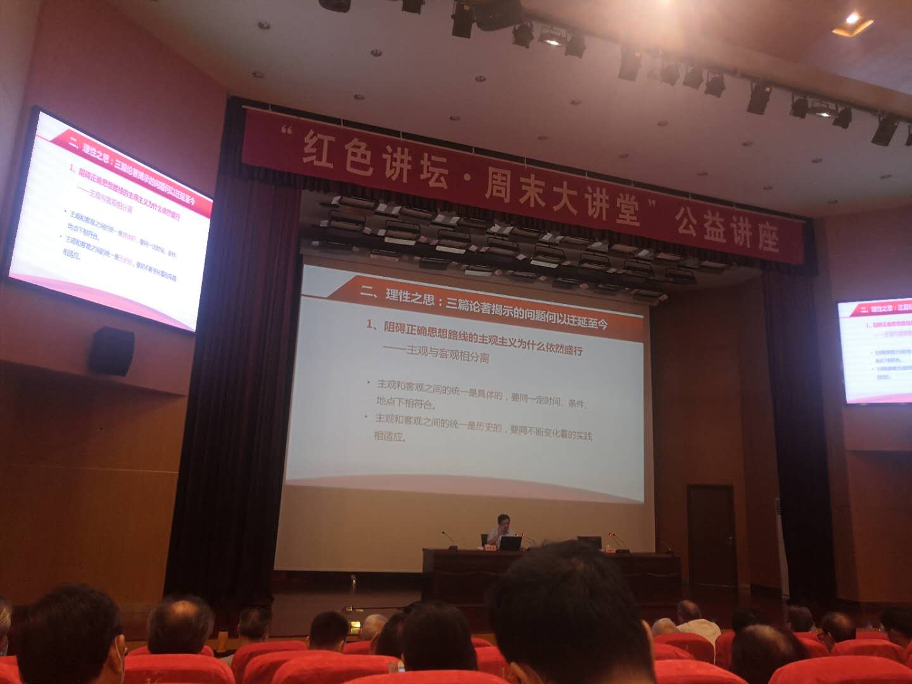

【信息发布时间：2020-07-08阅读次数：】 【我要打印】 【关闭】
2020年7月4日,中心党员参加了市委党校组织的《毛泽东延安整风三篇论著及当代价值》专题讲座，由周延胜讲师进行深刻分析，令人感触颇深。
周延胜讲师从延安整风运动的历史背景讲起，一直讲到三篇论著的核心要义，指出三篇论著揭示的问题：主观主义、宗派主义为何依然盛行？例举了现实生活中的种种表现，并提出实事求是，重视调查研究、不迷信洋教条、自律与他律并重等切实可行、解决问题的良方。
作为一名党员干部，我从中体会到，要严格自律，做政治上的明白人，一是要牢固树立忠诚意识；二是坚决不做“两面人”，把大局意识内化于心，外化于行；三是树立正确利益观，自觉远离庸俗关系。
